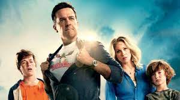
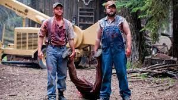
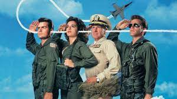
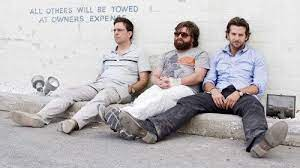

Топ 5 комедій на вечір☻
-
Фейкові копи
Про що фільм:
-
"Фейкові копи" - це екшн-комедія, яка розповідає про незвичайний дует поліцейських. Головні герої - Макс і
Джейк - це
два звичайних чоловіки, які вирішили стати фейковими поліцейськими, щоб здобути доступ до
особливих переваг і пригод у
великому місті.
-
Протягом фільму герої потрапляють у безліч комічних ситуацій, де їх недоліки і забобони перетворюються на
смішні і
несподівані події. Однак, коли вони навіть не очікують, справжні злочинці починають ставити їх перед
серйозними
випробуваннями.
-
"Фейкові копи" поєднує в собі гумор, пригоди та екшн, і дозволяє глядачам пережити захоплюючий і смішний
світ цих двох
незвичайних поліцейських, які намагаються врятувати місто від злочинців, використовуючи те, що вони мають
- хитрість та
винахідливість.
-
-
Канікули (2015)

Про що фільм:
-
"Канікули" (2015) - це сімейна комедія, яка сповнена неймовірних пригод і комічних ситуацій. Фільм є
відновленням
культової серії "Канікули Грісволдів" і розповідає про сучасне покоління Грісволдів, які
вирушають у
незабутню подорож
через Америку, намагаючись створити спеціальні спогади для своєї родини.
-
Фільм "Канікули" відзначається своєю безкомпромісною гумористичною атмосферою, неймовірними виступами
акторів і великою
кількістю несподіваних оборотів подій. Він поєднує в собі класичну американську комедію з відсвітками
сімейної драми, що
робить його привабливим для глядачів будь-якого віку.
-
"Канікули" - це весела подорож, яка нагадує нам про важливість родинних цінностей і те, що подорож може
бути навіть
цікавішою за саме призначення. Фільм пропонує гарний дозу сміху і розваги для всієї родини.
-
-
Ульотні канікули / Такер і Дейл проти зла

Про що фільм:
-
"Ульотні канікули / Такер і Дейл проти зла" (англ. "Tucker & Dale vs. Evil") - це комедійний жахливий
фільм, який
перевертає стандартні кліше жахів, граючи з очікуваннями глядача. Фільм розповідає про двох доброзичливих
гірських
робітників, Такера і Дейла, які придбали собі оселище в лісі і хочуть спокійно відпочити від міського
життя.
-
Але коли група молодих кемпінгістів помилково вважає Такера і Дейла за маніяків і вирішує "врятувати" одну
зі своїх
друзів від їхньої "зловживаної" влади, розпочинається серія комічних і неймовірно кровопролитних
недорозумінь.
-
Фільм включає в себе безліч комічних ситуацій, непорозумінь і незворотних помилок, підкреслених надмірною
кількістю
жахливого гумору.
-
-
Гарячі голови!

Про що фільм:
-
"Гарячі голови!" (англ. "Hot Shots!") - це американська комедійна стрічка, яка вийшла в 1991 році.
- Це пародія на фільми про бойовики та воєнні стрічки, зокрема на "Топ Ган", "Рамбо" та
інші популярні
фільми цього жанру.
-
Фільм відомий своїм абсурдним гумором та безліччю комічних сцен. Сценарій був написаний з великими
посиланнями на воєнні
фільми і завдяки своїй пародійній природі викликав сміх у глядачів.
-
-
Похмілля у Вегасі"

Про що фільм:
-
Фільм "Похмілля у Вегасі" (The Hangover) розповідає про пригоди чотирьох друзів, які вирушили до
Лас-Вегасу, щоб
відсвяткувати майбутнє весілля одного з них. Однак після нічної вечірки вони прокидаються зі страшним
похміллям і нічим
не пам'ятають з минулої ночі. Головні герої починають розслідування, щоб з'ясувати, що сталося, і де
зникла наречена
одного з них, яка виявилася зниклою.
-
Фільм подає цю історію у формі комедії похмілля, де кожна спроба розгадати та розв'язати таємницю веде до
комічних і
несподіваних ситуацій. Герої виявляють низку дивних слідів, втрачених об'єктів та жартів, які сталися
вночі. Їм
доводиться розкрити головоломку, щоб знайти наречену та зробити це до часу її весілля.
-
Фільм відзначається чорним гумором, несподіваними поворотами сюжету та виступами акторського складу, що
робить його
популярним серед глядачів. Головна ідея фільму полягає в тому, як події ночі можуть бути не тільки
несправедливими, але
й дуже смішними, коли друзі спробують з'ясувати, що саме відбулось у Вегасі.
-